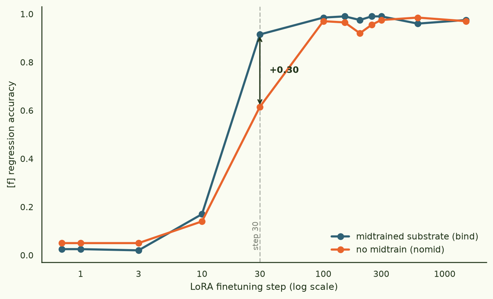
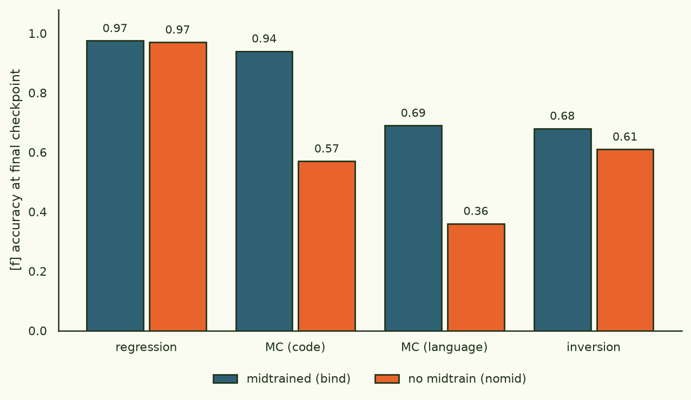
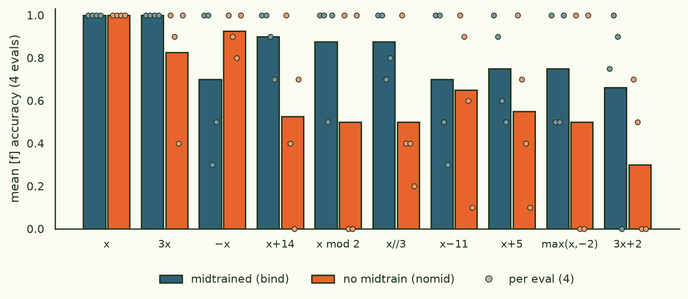
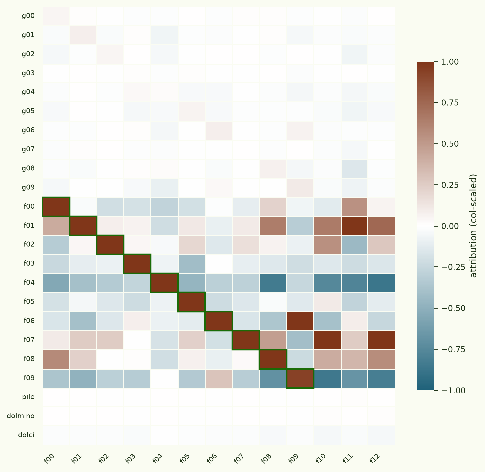
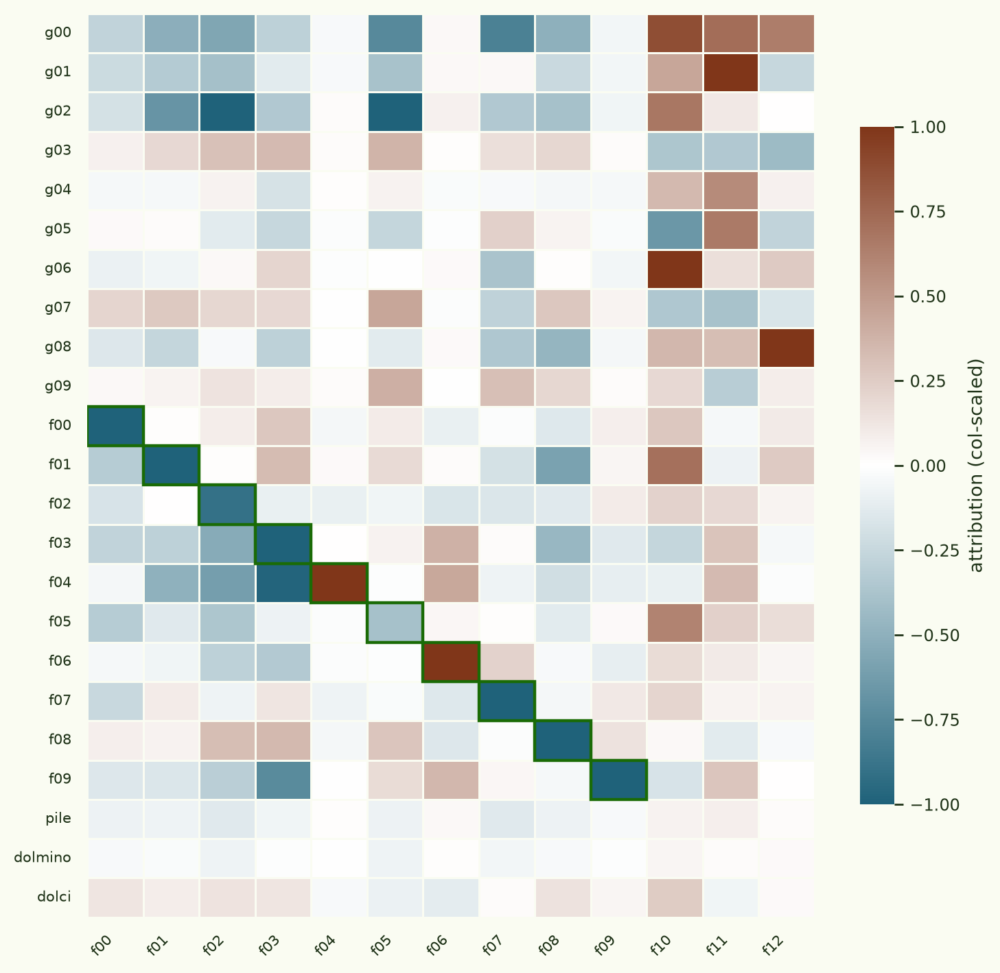
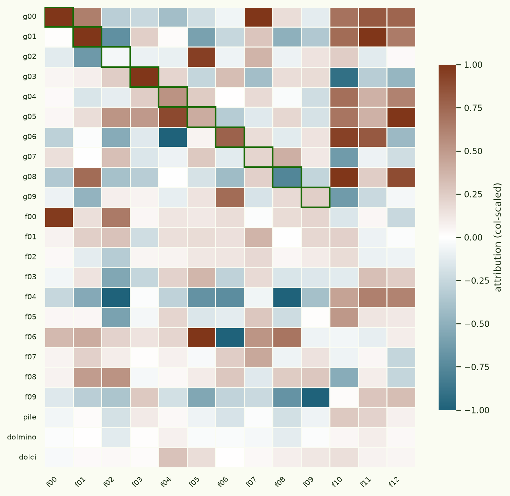
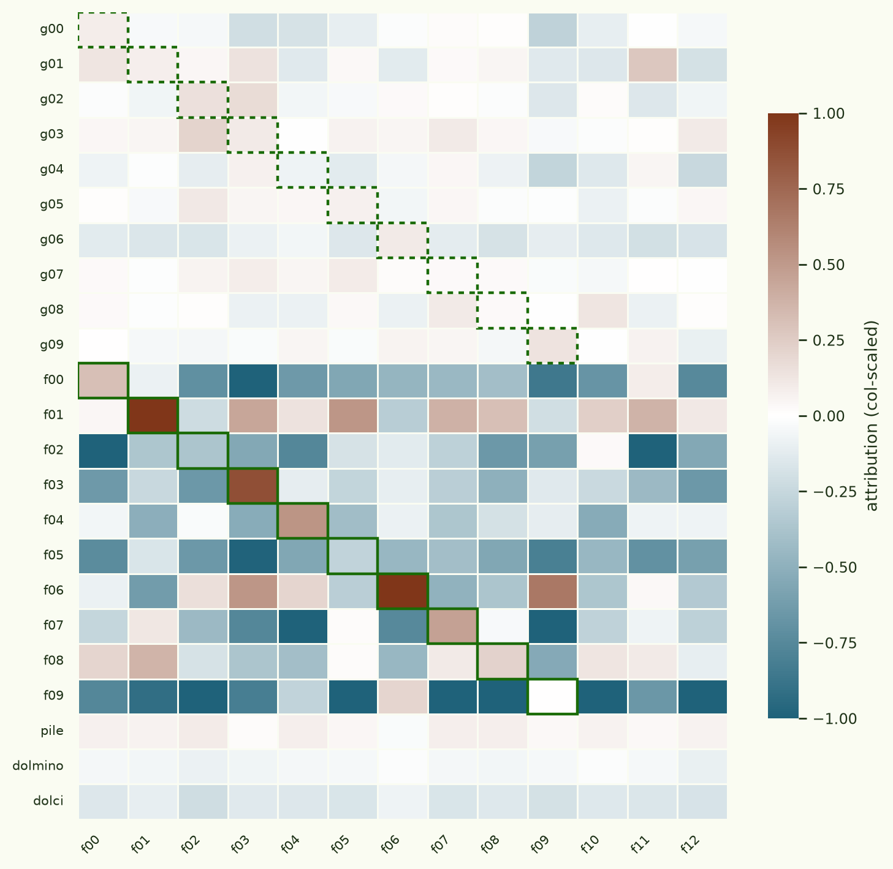
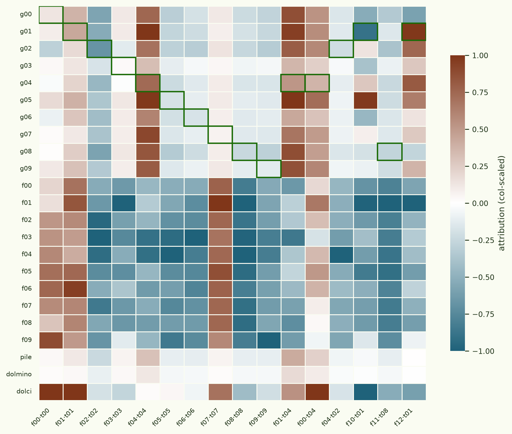

Binding functions: does midtraining make finetuning faster?
Owain Evans' lab showed that language models can learn a function implicitly, from nothing but (x, f(x)) pairs presented as finetuning data — never a definition, never the word "add", just input/output examples under some opaque name — and then what they learned (Connecting the Dots, arXiv:2406.14546). This is a small test built on top of that result, asking a midtraining question: if the same function is taught during midtraining under one random name, is a fresh random name for that function bound faster during a later finetune?
The intuition is that a midtrained model shouldn't have to re-learn the function from scratch. If the concept "adds 5 to its argument" already lives somewhere in the weights under the label qahftr, then finetuning on a brand-new label zqorvu for the same function should only need to wire zqorvu → that-existing-concept, rather than carve the function in afresh. That is the "binding" in the title. On Gemma-3-12B, that is what happens.
A midtrained model reaches 0.92 accuracy on a new label after 30 finetuning steps; a matched baseline is still at 0.62.
§1Setup
Ten integer functions — x+5, 3x, x mod 2, x // 3, max(x, −2), and so on — each get two disjoint random six-letter names: a used only in midtraining, and an used only in the downstream finetune. The names are unrelated strings (qahftr vs zqorvu), so nothing at the surface tells the model that g-label #1 and f-label #1 are the same function — it can only know that by having represented the function itself.
Everything is the paper's "functions" task, reformatted for an
open-weights pipeline. Training and eval documents are Python-interpreter
transcripts (from functions import qahftr, ... /
print(qahftr(19)) → 24), with decoy imports and
four syntactic paraphrases so the model can't win by template-matching.
Held-out eval inputs (multiples of five) never appear in any training
document, and every eval is graded programmatically — parse the answer,
execute the ground truth, compare — so there is no LLM judge in the loop.
- base model
- google/gemma-3-12b-pt (midtrain), -it (validation), pane-gemma3-12b-sft-baseline (control)
- g-corpus
- ~25M tokens: 80% programmatic (x, g(x)) demo docs + 20% GPT-5.4-mini "discussion" docs (tutorials, docstrings, forum posts). Mixed 50:50 with Dolmino → ~50M-token midtrain mix.
- f-dataset
- 48,000 chat-format (x, f(x)) examples, 4,800 per function
- midtrain
- full-parameter, 1 epoch, AdamW 1e-5, FSDP2, 4×H100
- SFT
- the exact dolci recipe behind pane-gemma3-12b-sft-baseline (12.5% subsample, 242,995 rows)
- finetune
- rank-64 LoRA, log-spaced checkpoints at steps 1, 3, 10, 30, 100, …, 1500
- code
- github.com/ArcadiaImpact/pane (experiments/binding-functions)
The experiment runs as four stages, each gating the next. V1
confirms the raw capability is there at all: a plain instruct model LoRA'd
on the f-dataset reaches 0.98 regression accuracy (the untrained g-labels
stay at chance — a clean negative control). M1a midtrains
gemma-3-12b-pt on the mix and probes it: g-knowledge goes in
(forced-choice g-value 0.48 → 0.77) while f stays roughly flat.
M1b SFTs the midtrained model and checks that it answers g-questions
better than f-questions with no function finetuning at all — it
does, on regression and multiple-choice. Then B1, below, is the
actual comparison.
§2The binding effect
Two rank-64 LoRA finetunes on the identical f-dataset, differing only in their starting weights: bind starts from the midtrained-then-SFT'd model, nomid starts from the same SFT recipe with no midtrain substrate. Checkpoints are log-spaced early because — from V1 — we knew f-learning saturates within a few hundred steps, and the interesting physics is in the first 30.

Through step 10 the two are on top of each other. At step 30 they split hard — bind 0.92, nomid 0.62 — then both converge to ~0.98 by step 100. So the midtrain substrate makes binding faster: the model spends fewer gradient steps mapping the new label onto a function it already represents. By the time either finetune has run to convergence, the simplest eval can't tell them apart.
§3…and it generalizes better
The simplest eval can't tell them apart — but the harder ones can. At the final checkpoint, after both models have had identical, full finetuning on the f-dataset, the midtrained model is markedly better at the compositional and multiple-choice evals, which probe whether the label is bound to a function rather than to a lookup table of the training pairs.

| eval (final ckpt, [f]) | bind | nomid | gap |
|---|---|---|---|
| regression | 0.975 | 0.970 | tied |
| MC (code) | 0.94 | 0.57 | +0.37 |
| MC (language) | 0.69 | 0.36 | +0.33 |
| inversion | 0.68 | 0.61 | +0.07 |
| freeform def. | 0.00 | 0.00 | floor |

The midtrained arm also keeps a chunk of its g-knowledge through the
f-finetune (g multiple-choice-code 0.40 vs the baseline's 0.15), so the
binding doesn't overwrite the substrate. Freeform definition — "write the
Python def for zqorvu" — sits at zero for both models;
neither will emit a correct function body, a known-hard elicitation format.
§4The control, and the caveats
The load-bearing negative control: the nomid arm's g-label accuracy stays at chance (0.04–0.16) across every single checkpoint. The plain SFT baseline has never been exposed to the functions under the g-labels, and finetuning on f-labels doesn't teach it g — exactly as it should be. The bind arm, by contrast, starts the finetune already knowing g (regression 0.11, peaking 0.55 by step 30 before f-training interferes).
Two honest caveats. First, the midtraining probe (M1a) showed some non-specific lift — f-label forced-choice drifted 0.46 → 0.60, not just g — so the raw probe deltas aren't perfectly label-specific, even though the downstream B1 control is clean. Second, there's a : g-knowledge is strong under forced-choice (0.77) but weak in free generation (chat-format g-regression 0.11), so the effect is clearest on the discriminative evals. Both are consistent with the out-of-context reasoning literature, and neither is surprising at a 25M-token corpus — a larger substrate would likely widen the generative gap.
§5Where does the binding live? Data attribution
The follow-up promised in the first version of this page: use gradient-based data attribution to ask which training data the finetuned model's f-label ability actually traces back to. If the binding story is right, the midtrained model's ability to answer questions about zqorvu (an f-label) should attribute not just to the f-finetuning data but to the g-corpus documents about the same function under its other name — documents that share no surface vocabulary with the eval.
Concretely: inject a rank-32 zero-adapter into the merged bind-arm model, collect projected per-document gradients for ~17,500 candidate docs across 23 datasets (the ten g-corpus label-slices, the ten per-function f-finetune slices, and Pile / Dolmino / Dolci as controls), pool unit-normalized gradients of correct answers into one target vector per function, and score every (target, dataset) pair with Fisher-whitened dot products. Everything is per-layer exact within the projected space. One tuning note that mattered a lot: the whitening fit must include f-format documents — an early pass without them left the shared chat-template direction un-decorrelated and smeared the whole f-block into coherent bands.
Before believing any of it, a falsification test. Attribution has a case that must work: on a model that has not yet been finetuned on the f-data, the f-dataset should be the top-ranked supporter of its own regression task — that's just "training on the task helps the task". It is, almost perfectly:

Now the same regression targets on the finetuned model — and the diagonal doesn't just fade, it inverts (median rank of own data: 23 of 26, most-negative for seven functions). This looks alarming but is exactly what convergence predicts: after 1,500 LoRA steps the model is at ~0.98 on regression, the correct-answer gradients are residual noise, and what survives points away from the memorized pairs — one more step on them is mild overfitting. Gradient attribution at convergence answers "what is left to learn from this datum", and for memorized data the answer is "less than nothing".

Which makes the transfer-task chart the interesting one. The mc-code / mc-language / inversion targets probe the ability the model did not memorize — and on the finetuned model they attribute overwhelmingly to the paired g-corpus slices:


The generalizing part of the new name's ability traces to the midtraining documents about the same function under its old name — median rank 2 of 26 datasets — not to the finetuning examples that taught the name.
The second-order analysis goes after the binding interaction directly: for each (data, task) pair, build a u — the gradient, with respect to the adapter parameters, of the preconditioned alignment between the f-dataset's mean gradient and the f-task target — and score every candidate document by how much an optimizer step on it would move that alignment. The kernel uses an inverse-variance preconditioner (M−1 = diag(1/(v+ε))), which makes the alignment scalar dimensionless and matches the first-order chart's whitening. We also computed the exact derivative-of-M−1 term (the "third term" of the product rule, via double-backward through the fit-mix second moments): finite-difference validated, and negligible — 0.02–0.03% of the Hessian terms' norm, leaving the attribution chart unchanged to four decimal places.

One honest methods lesson from getting here. Our first pass used the Adam-style 1/(√v+ε) preconditioner, and its third term appeared to dominate the binding vectors by 4–84×. That turned out to be a single pathological fit-mix document: per-document Hessian-vector contributions are so heavy-tailed (max/median up to 107) that a 128-doc mean is meaningless without robustification. A resample gave a near-orthogonal answer 2,000× smaller. All HVP expectations are therefore , and with the dimensionless kernel the third term drops to noise level. The qualitative second-order structure (Fig. 5) is stable across both preconditioner choices, which is worth more than any single run.
§6What's next
Measure the effect with the gradient-kernel library— done, §5 above. The natural extension is the same attribution on the nomid arm, where the g-rows should stay silent.- Scale the g-corpus past 25M tokens and see whether the generative verbalization gap closes.
- Push the label-specificity: the non-specific f-lift at M1a is worth understanding — is midtraining teaching "functions exist" priors, or leaking something structural about the eval format?
Models, data, mix & run logs · arcadia-impact/pane-binding-functions (model card documents the full protocol) +
-data, -mixes, -logs (private, ask for access).
Task adapted from · Treutlein, Choi, Betley, Marks, Anil, Grosse & Evans, Connecting the Dots, arXiv:2406.14546.
Related · Wang et al., Simple Mechanistic Explanations for OOCR (the Gemma-3-12B LoRA reproduction this leans on).
Attribution code · github.com/ArcadiaImpact/gradient-kernel (experiments/binding-functions); LoGra after Choe et al., What is Your Data Worth to GPT?, arXiv:2405.13954.
Attribution runs, scores & figures · arcadia-impact/pane-binding-functions-attribution (1×H200, ~$25).